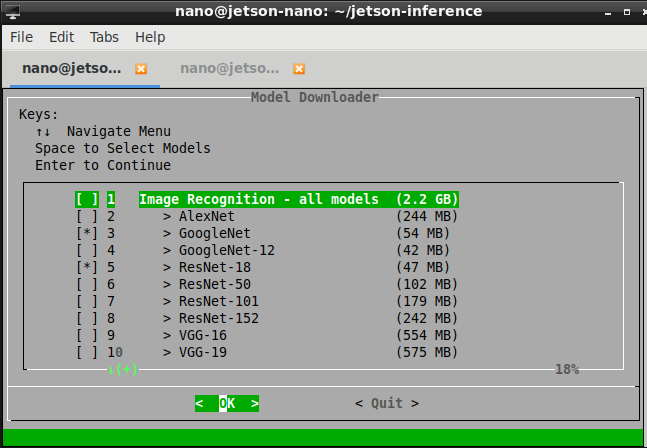

Objects Detection with DetectNet
The previous recognition examples output class probabilities representing the entire input image. Next we're going to focus on object detection, and finding where in the frame various objects are located by extracting their bounding boxes. Unlike image classification, object detection networks are capable of detecting many different objects per frame.

The detectNet object accepts an image as input, and outputs a list of coordinates of the detected bounding boxes along with their classes and confidence values. detectNet is available to use from Python and C++. See below for various pre-trained detection models available for download. The default model used is a 91-class SSD-Mobilenet-v2 model trained on the MS COCO dataset, which achieves realtime inferencing performance on Jetson with TensorRT.
As examples of using the detectNet class, we provide sample programs for C++ and Python:
detectnet.cpp(C++)detectnet.py(Python)
These samples are able to detect objects in images, videos, and camera feeds. The Camera Streaming and Multimedia can pass the video directly to detectNet.
Detecting Objects from Images
First, let's try using the detectnet program to locates objects in static images. In addition to the input/output paths, there are some additional command-line options:
- optional
--networkflag which changes the detection model being used (the default is SSD-Mobilenet-v2). - optional
--overlayflag which can be comma-separated combinations ofbox,lines,labels,conf, andnone- The default is
--overlay=box,labels,confwhich displays boxes, labels, and confidence values - The
boxoption draws filled bounding boxes, whilelinesdraws just the unfilled outlines
- The default is
- optional
--alphavalue which sets the alpha blending value used during overlay (the default is120). - optional
--thresholdvalue which sets the minimum threshold for detection (the default is0.5).
If you're using the Docker container, it's recommended to save the output images to the images/test mounted directory. These images will then be easily viewable from your host device under jetson-inference/data/images/test.
Here are some examples of detecting pedestrians in images with the default SSD-Mobilenet-v2 model:
# C++
root@jetson-nano:/jetson-inference/build/aarch64/bin# ./detectnet --network=ssd-mobilenet-v2 images/peds_0.jpg images/test/output.jpg # --network flag is optional
# Python
root@jetson-nano:/jetson-inference/build/aarch64/bin# ./detectnet --network=ssd-mobilenet-v2 images/peds_0.jpg images/test/output.jpg # --network flag is optional

# C++
root@jetson-nano:/jetson-inference/build/aarch64/bin# ./detectnet images/peds_1.jpg images/test/output.jpg
# Python
root@jetson-nano:/jetson-inference/build/aarch64/bin# ./detectnet.py images/peds_1.jpg images/test/output.jpg

note: the first time you run each model, TensorRT will take a few minutes to optimize the network.
this optimized network file is then cached to disk, so future runs using the model will load faster.
Below are more detection examples output from the console programs. The 91-class MS COCO dataset that the SSD-based models were trained on include people, vehicles, animals, and assorted types of household objects to detect.

Various images are found under images/ for testing, such as cat_*.jpg, dog_*.jpg, horse_*.jpg, peds_*.jpg, ect.
Processing Video Files
You can also process videos from disk.
# Download test video
root@jetson-nano:/jetson-inference/build/aarch64/bin# cd images
root@jetson-nano:/jetson-inference/build/aarch64/bin/images# wget https://nvidia.box.com/shared/static/veuuimq6pwvd62p9fresqhrrmfqz0e2f.mp4 -O pedestrians.mp4
# C++
root@jetson-nano:/jetson-inference/build/aarch64/bin# ./detectnet pedestrians.mp4 images/test/pedestrians_ssd.mp4
# Python
root@jetson-nano:/jetson-inference/build/aarch64/bin# ./detectnet.py pedestrians.mp4 images/test/pedestrians_ssd.mp4

# Download test video
root@jetson-nano:/jetson-inference/build/aarch64/bin# cd images
root@jetson-nano:/jetson-inference/build/aarch64/bin/images# wget https://nvidia.box.com/shared/static/i5i81mkd9wdh4j7wx04th961zks0lfh9.avi -O parking.avi
# C++
root@jetson-nano:/jetson-inference/build/aarch64/bin# ./detectnet parking.avi images/test/parking_ssd.avi
# Python
root@jetson-nano:/jetson-inference/build/aarch64/bin# ./detectnet.py parking.avi images/test/parking_ssd.avi

Remember that you can use the --threshold setting to change the detection sensitivity up or down (the default is 0.5).
Pre-trained Detection Models Available
Below is a table of the pre-trained object detection networks available for download, and the associated --network argument to detectnet used for loading the pre-trained models:
| Model | CLI argument | NetworkType enum | Object classes |
|---|---|---|---|
| SSD-Mobilenet-v1 | ssd-mobilenet-v1 |
SSD_MOBILENET_V1 |
91 (COCO classes) |
| SSD-Mobilenet-v2 | ssd-mobilenet-v2 |
SSD_MOBILENET_V2 |
91 (COCO classes) |
| SSD-Inception-v2 | ssd-inception-v2 |
SSD_INCEPTION_V2 |
91 (COCO classes) |
| DetectNet-COCO-Dog | coco-dog |
COCO_DOG |
dogs |
| DetectNet-COCO-Bottle | coco-bottle |
COCO_BOTTLE |
bottles |
| DetectNet-COCO-Chair | coco-chair |
COCO_CHAIR |
chairs |
| DetectNet-COCO-Airplane | coco-airplane |
COCO_AIRPLANE |
airplanes |
| ped-100 | pednet |
PEDNET |
pedestrians |
| multiped-500 | multiped |
PEDNET_MULTI |
pedestrians, luggage |
| facenet-120 | facenet |
FACENET |
faces |

nano@jetson-nano:~$ cd jetson-inference/tools
nano@jetson-nano:~/jetson-inference$ ./download-models.sh
Running Different Detection Models
You can specify which model to load by setting the --network flag on the command line to one of the corresponding CLI arguments from the table above. By default, SSD-Mobilenet-v2 if the optional --network flag isn't specified.
For example, if you chose to download SSD-Inception-v2 with the Model Downloader tool, you can use it like so:
# C++
root@jetson-nano:/jetson-inference/build/aarch64/bin# ./detectnet --network=ssd-inception-v2 input.jpg output.jpg
# Python
root@jetson-nano:/jetson-inference/build/aarch64/bin# ./detectnet.py --network=ssd-inception-v2 input.jpg output.jpg
Assignment
Evaluate the accuracy and inference time of peds_3.jpg, humans_7.jpg for the object detection models launching the inference with the option --network for PedNet, SSD-Mobilenet-v2, SSD-Inception-v2, MultiPed
Please send a message to the professor as soon as you finished